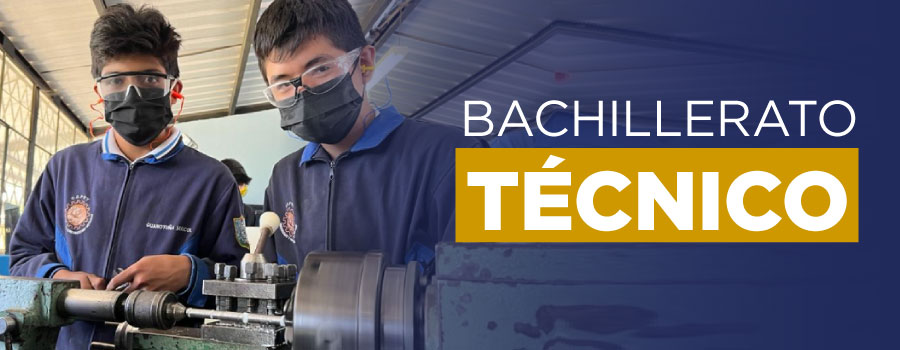

El Bachillerato Técnico es una opción dentro del Bachillerato General Unificado, en el que las y los estudiantes, además de asignaturas del Tronco Común, pueden optar para recibir una formación técnica en la figura profesional que seleccionen.
El Bachillerato Técnico es una elección válida que brinda a aquellos estudiantes que desean o necesitan la oportunidad de incorporarse tempranamente al mundo laboral.
Actualmente, nuestro Bachillerato Técnico ofrece dos figuras profesionales que responden a las demandas tecnológicas actuales: Soporte Informático, y Redes y Telecomunicaciones. Estas especialidades brindan a los estudiantes una formación práctica y actualizada para su desarrollo académico y profesional.
Fuente: Sitio web del Ministerio de Educación del Ecuador
Figuras Profesionales